曲を選んでシャッターを押すと、ちょうどその拍の長さだけ撮れます。撮り終えたら「動画を作る」を1回押すだけ。撮ったあとに編集する時間はいりません。
無料 · アカウント不要 · サーバーなし · 透かしなし
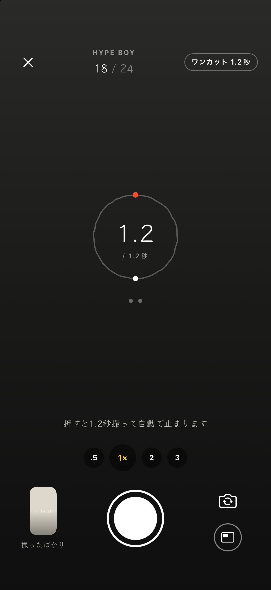
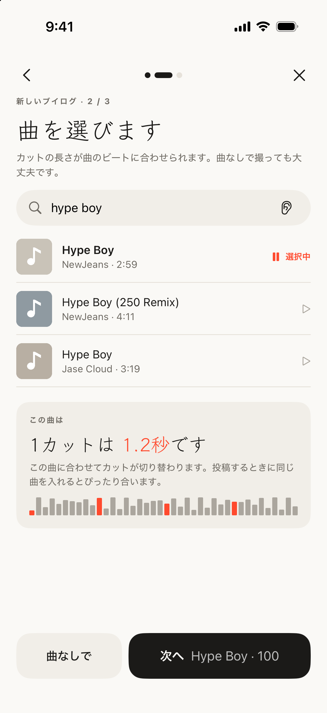
Apple Musicで検索して30秒試聴。アプリがビートを測って1カットの長さを決めます。サブスクなしで使えます。
手にビートが伝わり、リングが1周したら完了。レンズは.5倍から3倍、横にすれば横長ブイログ。
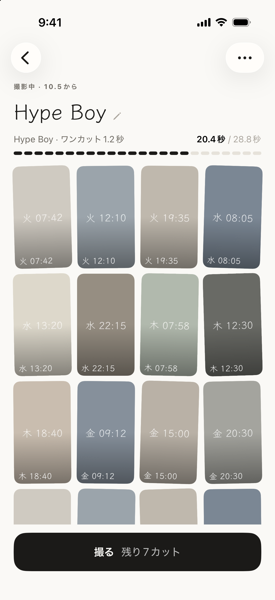
12・24・36カットで1本。何本も同時に撮れて、撮り終えたものは「まとめて見る」に集まります。
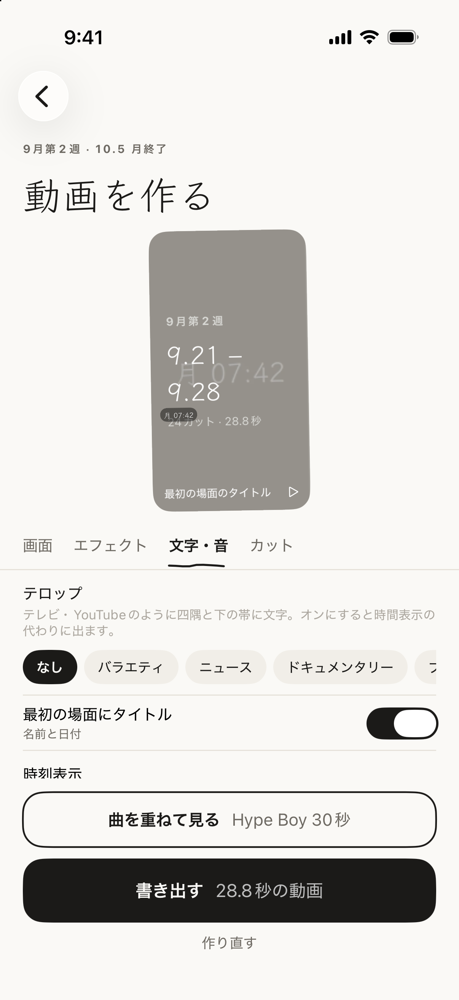
タイトル、カットごとの時刻・撮った街・ひとこと、色味とエフェクト。サーバーには上がりません。
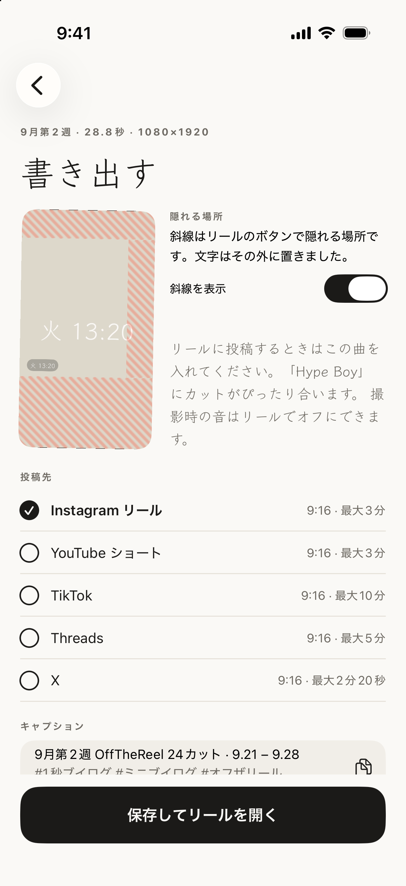
リール・ショート・TikTokのボタンに隠れない位置に文字を置きます。保存してそのままリールへ。曲は投稿するときに入れてください。
選んだらすぐ見える。動画を作る画面の上で動画がずっと再生されます。色・文字・動き・形は選んだ瞬間に変わるので、作り終えるまで待つ必要はありません。下の道具6つ（スタイル・レイアウト・色・文字・動き・音）は、することの名前そのままです。
スタイルひとつで一度に。基本・フィルム日記・バラエティ・ニュース・3分割・静か。選んだあとほかの道具で調整してもOK。カット列でカットを押すと、そのカットだけ。
分割表示。1画面に上下2つ、または3つ。一緒に、または上から順に切り替わります。横向きのカットは3分割にぴったり。
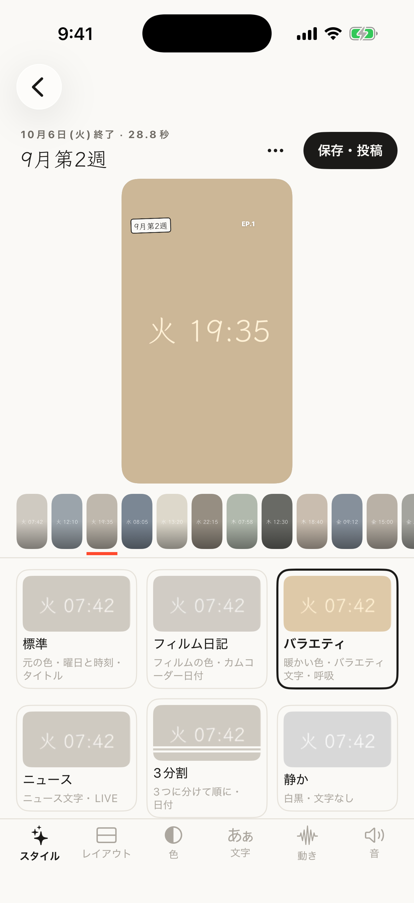
スタイル・バラエティ
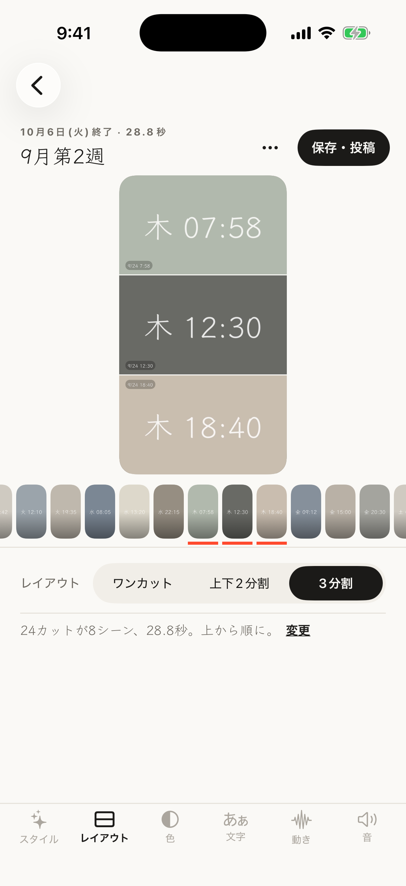
分割表示・3つ
ホームのいちばん上にある「ワンカットためておく」を押すと、1.2秒のカットが撮れて「ためたカット」に日付順にたまります。あとで何カットか選んで新しいブイログにしたり、撮影中のブイログの「埋める」から呼び出して空きマスに入れたり。入れたカットはそちらへ移るので、二重には残りません。
とりあえず撮って、行き先はあとで →
ロック画面・コントロールセンター・アクションボタンから押すと、ロックしたまま撮影画面が開きます。撮ったカットは、ロックを解除してアプリを開いたときに、固定したブイログか最後に撮ったブイログへ。どちらもなければ「ためたカット」に入ります。iOS 18以降。
「今日モード」や24日チャレンジのように毎日撮る日は、ロック画面とダイナミックアイランドに「DAY 9 · 今日はまだ」が出ます。撮るとすぐ切り替わり、夜12時に消えます。
拍ごとにほんの少し寄って戻る、ふわっと明るくなる、1カットかけてゆっくり横に流れる。カットが切り替わる瞬間はいつも止まっているので、跳ねません。「動画を作る › エフェクト」で、弱め・ふつう。
設定 › 言語で、한국어・English・日本語から選べます。最初は端末の言語に合わせます。動画に入る日付やテロップも選んだ言語で出ます。
撮影画面の「前後」ボタンをオンにすると、シャッター1回で両方撮れます。1つの画面に一緒になら、背面の映像の左上にセルフィーが小さく入ります。リールの文字に隠れない位置です。「動画を作る」で半分ずつや背面のみにも変えられます。
2カットに分けるなら、1回で2マス埋まります。背面1カット、セルフィー1カットの順に入るので、12カットのブイログが6回で埋まります。横長ブイログでも使えて、撮り直すときは背面・セルフィー・前後から選べます。
1回押せば両側 →
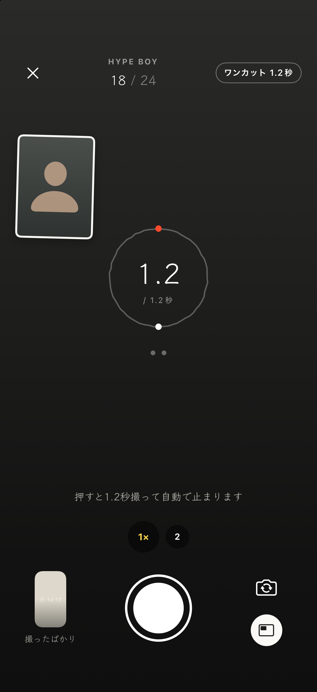
前後同時 · 撮影
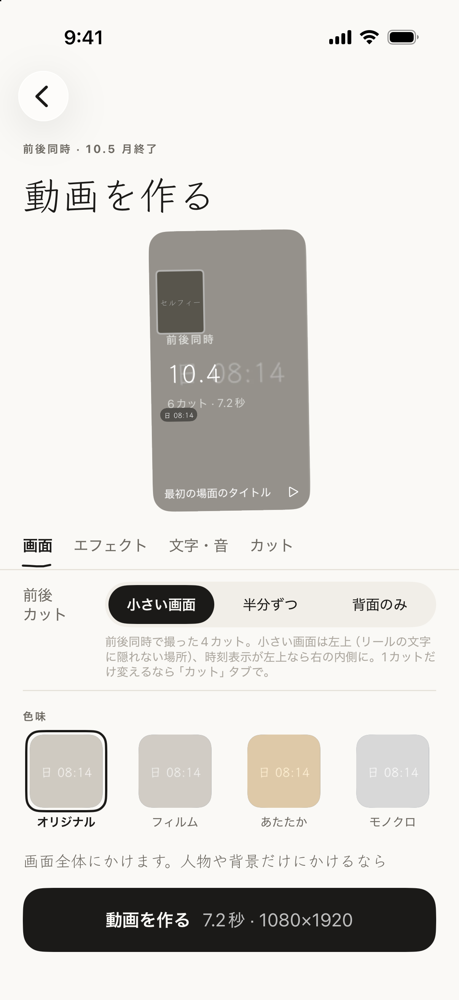
置き方 · 動画を作る
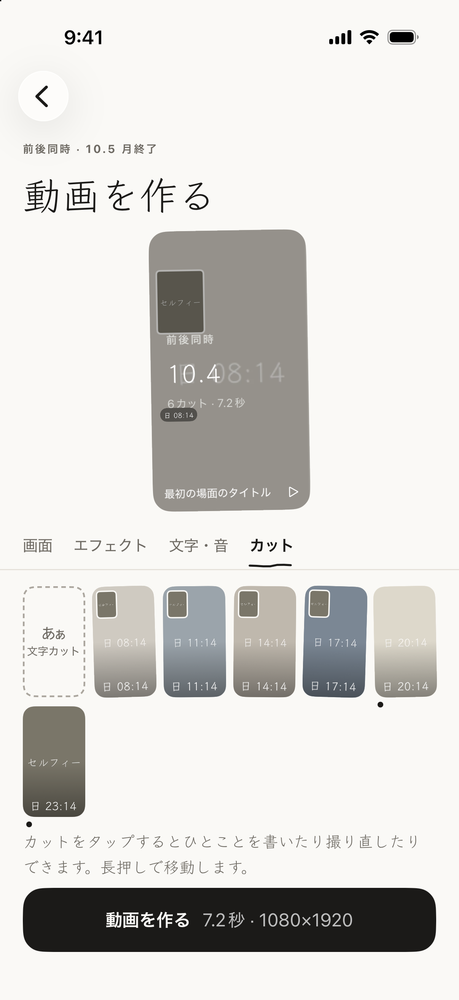
前後カット · カット一覧
ロック画面・コントロールセンター・アクションボタンに「ワンカット」ボタンを置けば、押してすぐ撮影画面。最後に撮ったブイログに入り、上の名前を押せば別のブイログに変えられます。通知を押してもそのまま撮影へ。
撮った日は、ホームの今週の7マスと今月のカレンダーにその日の最初のカットで並び、「まとめて見る」では1年の記録グリッドになります。カレンダーはホーム画面のウィジェットにも置けます。
2タップでワンカット →
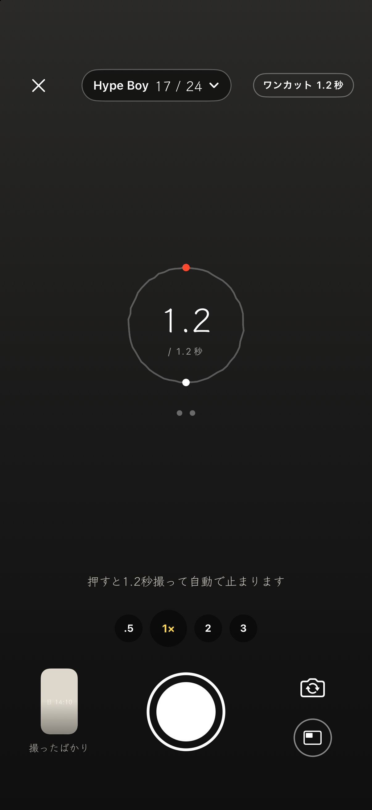
すばやく撮る · ロック画面から
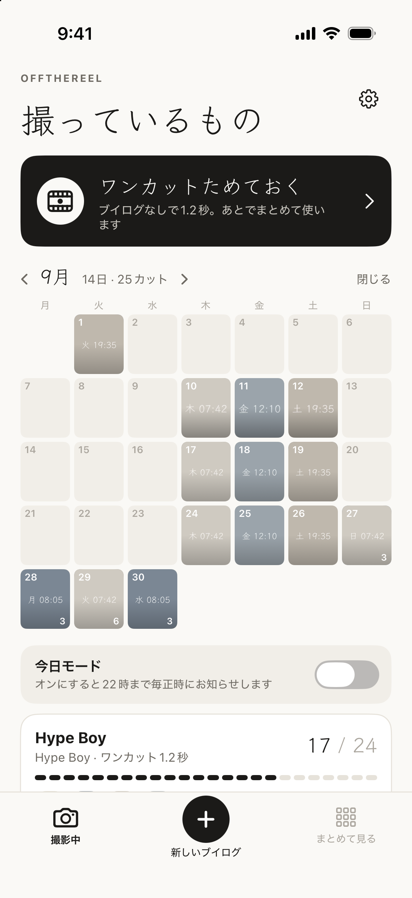
今月のカレンダー · ホーム
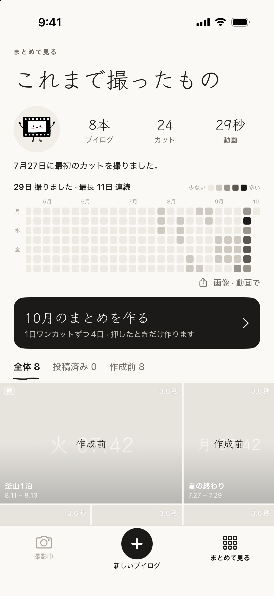
1年の記録 · まとめて見る
「まとめて見る」の「9月のまとめを作る」を押すと、その月に撮ったカットを1日1カットずつ集めて1本に。その日の最初・最後・朝のカットから選ぶか、自分で選びます。ビートは曲か、手で叩いて1つに合わせます。「カレンダーで」を選ぶと、その日のカットが1拍だけ大きく出てからカレンダーのマスに収まり、最後はぎっしり埋まったカレンダーで終わります。
動画の合間には、色や写真の背景に文字だけをのせた文字カットを。画面には、バラエティ・ニュース・ドキュメンタリー・ブイログ風に、四隅と下の帯へテロップを。1年の記録と今月のカレンダーはストーリーサイズの画像で、1月から埋まっていく記録は6秒の動画で保存できます。
押したときだけ作ります →
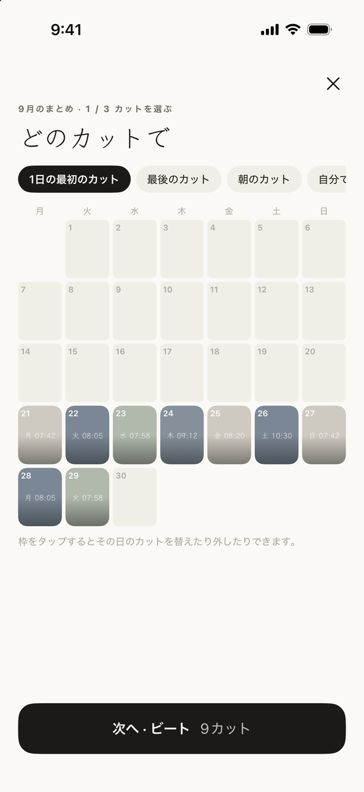
月のまとめ · 選ぶ
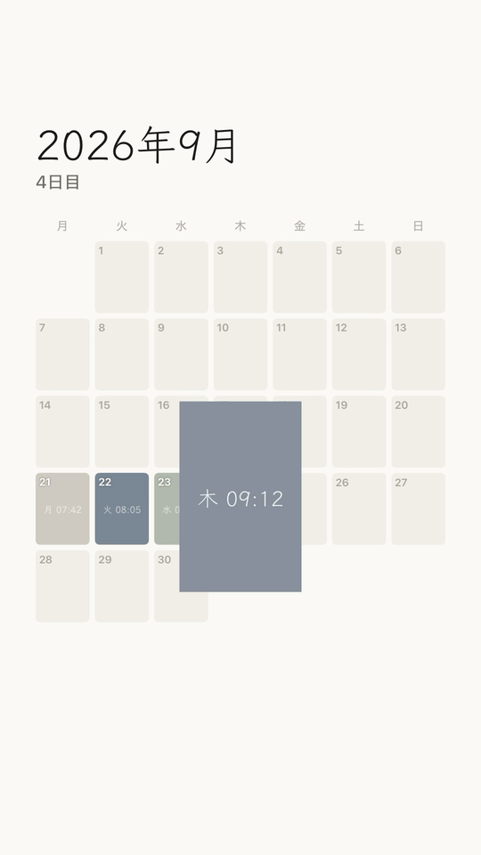
カレンダーで · できた動画
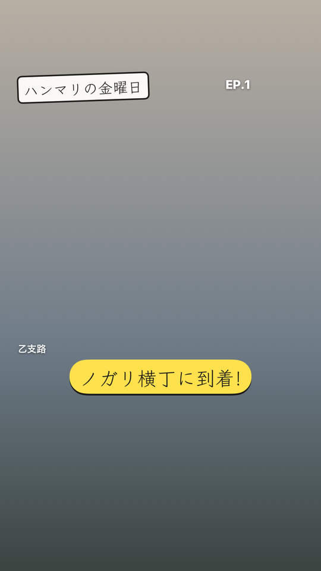
テロップ · バラエティ風
手で描いた四角の中・人物・背景から選んで、そこだけに色味をのせます。背景だけモノクロにすれば、人物だけがカラーで残ります。
ふちは手描き・紙・フィルムから。時刻表示は曜日・日付・ビデオカメラ・何日目から選べて、撮った街と手書きのひとことも付きます。
実際に作った動画3つ →
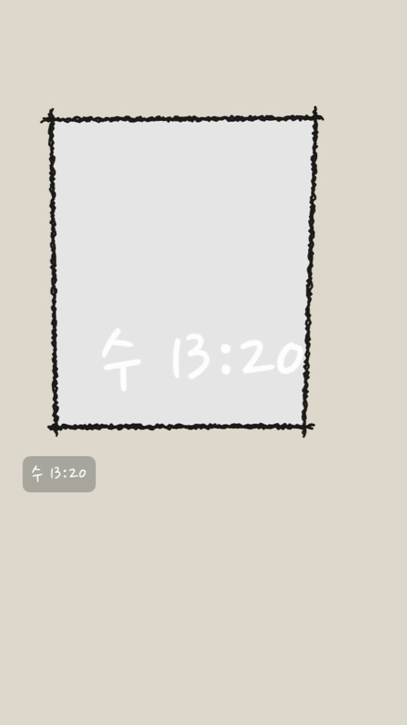
手描き · 基本
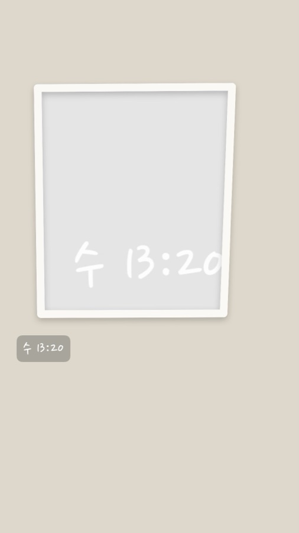
紙 · 貼った写真のように
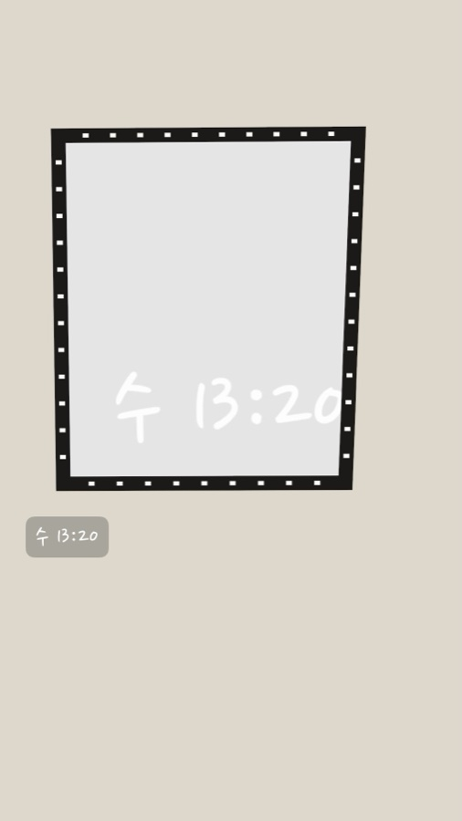
フィルム · 帯と穴
タイムラインを引っぱって切る画面はありません。カットの長さはビートが決めて、人は撮るだけ。
12・24・36カットを埋めたら1本。どこまでもたまっていくクリップの引き出しではありません。
アカウントもサーバーもありません。インターネットは曲の検索にしか使いません。カットと動画は、このスマホと写真アプリにだけあります。
無料で、書き出した動画には何も入りません。
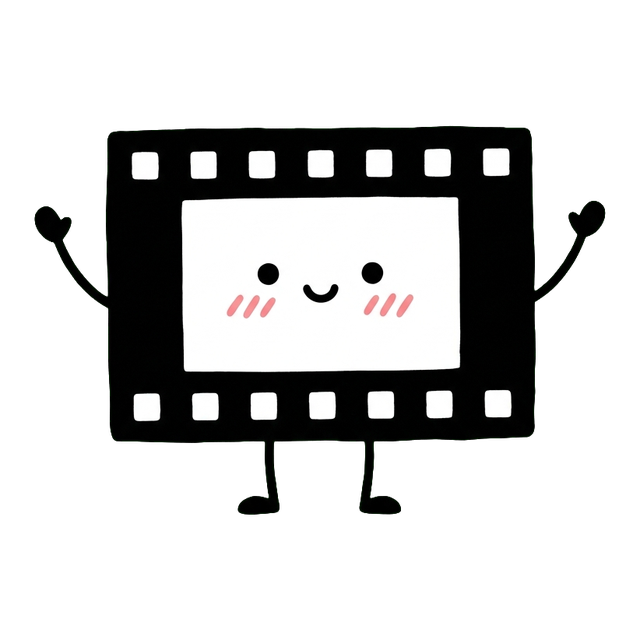
体はフィルム1コマ。撮っているものがないとき、動画を作っているとき、できあがったときだけ出てきます。撮影画面には出ません。じゃまになるので。
いいえ。Apple Musicの試聴は、ビートを測って確かめるためだけに使います。動画は無音か、撮ったときの音で書き出されます。曲はリールやショートに投稿するときに入れてください。ビートが合っているので、そのままぴったり重なります。
いいえ。検索と30秒の試聴はサブスクなしで使えます。
選んだ曲のビートで決まります。「ふつう」なら、ふつうのテンポの曲で約1.2秒。「速め」「ゆったり」もあります。曲なしで撮ると1.2秒です。
カットごとに1回。カットを押して「撮り直す」。気に入らなければ前のカットに戻せて、空にしたカットは30日間復元できます。長押しして引っぱれば順番が変わります。
はい。新しいブイログを作るときに「横」を選べば、スマホを横にして撮り、横長の動画か、縦の中に横長を収めた動画を作れます。
オンにすれば入ります。最初はオフです。オンにすると、シャッターを押したときだけ位置を見て「下北沢」のように街の名前を付けます。座標はスマホの外に出ません。
毎日決めた時刻にお知らせするか、「今日モード」をオンにすれば毎正時にお知らせします。ホーム画面・ロック画面のウィジェットもあります。
いいえ。月のまとめは、元のブイログのカットをそのまま指しています。ファイルはコピーしないので、まとめを消しても元のカットは残ります。
はい。「曲を選ぶ」の耳ボタンを押すと、数秒聴いて曲を聞き分けます（Apple ShazamKit）。マイクを使うのは押したときだけで、音は保存しません。
はい。「写真から埋める」でLive Photosや撮っておいた動画を選ぶと、一番ブレの少ない瞬間をカットにします。
撮影画面の切り替えボタンの下にある「前後」ボタンを押して、「1つの画面に一緒に」か「2カットに分ける」を選んでください。ブイログごとに覚えます。前後同時のときズームは1・2倍まで。2つのカメラを同時に使えるiPhone（XS以降）で表示されます。
iOS 18以降で、ロック画面を長押しして「カスタマイズ」→ 下の懐中電灯かカメラの場所を押して「オフザリール · ワンカット」を選びます。コントロールセンターとアクションボタン（iPhone 15 Pro以降）にも置けます。アプリの「設定 > すばやく撮る」に手順があります。
どこにも行きません。撮ったカットはアプリの中と、写真アプリの「オフザリール」アルバム（オフにできます）にだけあります。作った動画は「書き出す」を押したときだけ写真アプリに保存されます。プライバシーポリシー